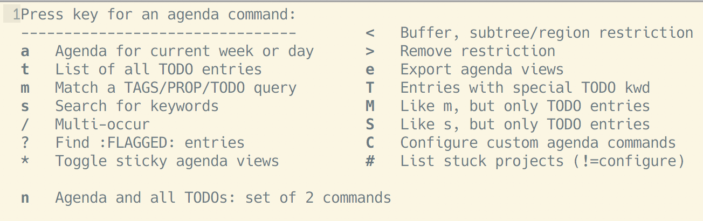

我的 GTD 系统
目录
1 配置后的快捷键
| gtd 相关快捷键 | 描述 |
|---|---|
| C-c C-t | org-mode 下，切换当前标题的 todo 关键字 |
| C-c C-s | org-mode 下，gtd 待办事项的开始时间 |
| C-c C-d | org-mode 下，gtd 待办事项的截止时间 |
| C-c a | 打开 org-agenda 日程操作界面 |
| C-c c | 打开 org-capture 模版选择界面 |
| C-c C-w | 调用 org-refile 函数。转发光标下的代办事项到其它文件 |
| M-x he/org-refile-to-datetree | 转发光标下的代办事项到 gtd.org 文件 |
| M-x org-pomodoro | 为光标下的代办事项 开始/打断 一个番茄时间 |
2 使用场景
- 每天下班前统计明天要做的事情，罗列成 TODO 清单
- 工作过程中收集突发但优先级不高的事情，临时记录下来。然后重新返回当前的工作流程，做到对当前工作流程的打断程度最小
- 记录工作日志
3 3个 GTD 文件
工作流程：
- 每天下班前统计明天要做的事情，罗列成 TODO 清单，保存到 gtd.org。
- 工作过程中收集到优先级不高的突发事件，临时记录到 inbox.org。然后继续处理当前事情。
- 处理完手头工作，整理 inbox.org。把其中的待办事件转发到 gtd.org 或 someday.org。
- 根据事件优先级选择最高优先的事件进行处理
| 文件名 | 描述 |
|---|---|
| inbox.org | 收集突发临时事件、灵感等 |
| gtd.org | 工作日志 |
| someday.org | 空闲时间要做的事情。比如：搭建我的博客系统；理个发；最近去趟超市等 |
inbox.org 例子
* inbox ** TODO [#B] [2018-05-04 Fri 12:30] 为 IOS 端发包 DEADLINE: <2018-05-04 Fri 21:00> SCHEDULED: <2018-05-04 Fri 20:00> ** TODO [#B] [2018-05-04 Fri 12:47] 关注下午 KPL 赛事，提醒运营人员在监控管理后台为其添加监控，保证直播活动稳定进行 DEADLINE: <2018-05-04 Fri 18:00> SCHEDULED: <2018-05-04 Fri 16:30>
gtd.org 例子
* 2018 ** 2018-01 January... ** 2018-02 February... ** 2018-03 March... ** 2018-04 April... ** 2018-05 May *** 2018-05-01 Tuesday... *** 2018-05-02 Wednesday... *** 2018-05-03 Thursday **** TODO [#B] [2018-05-03 Thu 08:11] BBB 服务代码的收尾工作 DEADLINE: <2018-05-03 Thu 11:00> SCHEDULED: <2018-05-03 Thu 09:00> **** DONE [#A] [2018-05-03 Thu 08:13] AAA 服务和 IOS 端、安卓端联调 DEADLINE: <2018-05-03 Thu 14:00> SCHEDULED: <2018-05-03 Thu 16:00> **** DELAY [#B] [2018-05-03 Thu 08:15] CCC 服务需要与 XXX 部门小明对接联调，但小明临时有事，推迟到明天 DEADLINE: <2018-05-03 Thu 11:00> SCHEDULED: <2018-05-03 Thu 18:00> *** 2018-05-04 Friday **** TODO [#B] [2018-05-04 Fri 08:21] 下一版本需求排期会议 本楼层-1号会议室 DEADLINE: <2018-05-04 Fri 12:00> SCHEDULED: <2018-05-04 Fri 11:00> **** TODO [#B] [2018-05-04 Fri 08:23] DDD 服务和 IOS 端、安卓端联调 DEADLINE: <2018-05-04 Fri 20:00> SCHEDULED: <2018-05-04 Fri 14:00>
someday.org 例子
* some day ** TODO [#C] [2018-08-15 Wed 16:57] 美化我的博客目录显示。使其悬浮于页面右上角，点击隐藏目录，再次点击显示目录 DEADLINE: <2018-05-06 Sun> SCHEDULED: <2018-05-05 Sat> ** TODO [#C] [2018-08-16 Thu 13:52] 抽个时间理个发 DEADLINE: <2018-05-08 Tue> SCHEDULED: <2018-05-03 Thu>
4 todo 关键字
4.1 配置 todo 关键字
(setq org-todo-keywords '((sequence "TODO" "DOING" "DELAY" "|" "DONE")))
| 关键字 | 描述 |
|---|---|
| TODO | 代办事项 |
| DOING | 正在做的事情 |
| DELAY | 延期的事情 |
| DONE | 已完成 |
4.2 todo 关键字配色
(setq org-todo-keyword-faces '(("TODO" . (:foreground "#FF4500" :weight bold)) ("DOING" . (:foreground "#33cc33" :weight bold)) ("DELAY" . (:foreground "black" :weight bold)) ("DONE" . (:foreground "#27AE60" :weight bold)) ))
5 收集事件
收集事件使用 org-capture 来实现。配置完成后效果图如下：

图1 选择要收集的事件的模版进行捕获事件

图2 编辑 entry
5.1 模版配置
需要定义捕获事件的模版。下面配置是 org-capture 的三个模版，分别是收集代办事件到 inbox.org gtd.org someday.org
(setq org-capture-templates '( ("i" "inbox" entry (file+headline "~/gtd/inbox.org" "inbox") "* TODO [#B] %U %i%?" :empty-lines 1) ("s" "someday" entry (file+headline "~/gtd/someday.org" "some day") "* TODO [#C] %U %i%?" :empty-lines 1) ("g" "GTD" entry (file+datetree "~/gtd/gtd.org") "* TODO [#B] %U %i%?" :empty-lines 1) ))
isg- 表示选择 org-capture 模版的快捷键
[#B]- todo 事件优先级。默认有3个级别，分别为 A B C
%i- 表示 Mark set 选中的内容插入到该位置
%^{Description}- 表示会提示输入一个 Description，得到 Description 后，它会写入到文档的
%^{Description}位置 %?- 模版创建好后，光标会跳转到该位置
%U- 当前包含日期和时间的未激活的 timestamp，在 org 中使用
[]括起来，例如：[2018-08-13 Mon 19:12] %T- 当前包含日期和时间激活的 timestamp，在 org 中使用
<>括起来，例如:<2018-03-04 Sun 19:26> - 激活(active)和未激活(inactive)的 timestamp 的区别
- 后者不会出现在 org-agenda 中
%^g- 会提示为该 org node 输入 tag
:empty-lines 1- 在该位置插入一个空行
entry- 带有 headline 的一个 Org mode 节点。也就是一个 todo 事件
datetree- 使用日期树（即按照 年-月-日 作为文档大纲）组织 org 文档
5.2 快捷键配置
添加如下配置即可通过快捷键 C-c c 来调用函数 org-capture 进入模版选择界面。选择模版，然后记录事件。然后按 C-c C-c 即可把自动该事件插入相应文件
(global-set-key (kbd "C-c c") 'org-capture)
6 转发事件（entry）
转发事件就是把光标所在 entry 剪切到目标文件的某个标题下面
6.1 转发到普通文件
需要配置转发的目的结点候选项
(setq org-refile-targets '( ("~/gtd/someday.org" :level . 1) ("~/gtd/gtd.org" :maxlevel . 3) ))
其中
- 配置中的第一条提供一个 someday.org 的一级标题的候选项
- 第二条配置把 gtd.org 前3级标题都作为一个候选项
光标移动到要转发的 entry 上，按快捷键 C-c C-w 调用函数 org-refile 进行转发。然后选择一个候选项，将该 entry 作为一个子标题剪切到候选项下面
6.2 转发到 datetree 文件
(defun he/org-read-datetree-date (d) (let ((dtmp (nthcdr 3 (parse-time-string d)))) (list (cadr dtmp) (car dtmp) (caddr dtmp)))) ;; refile 一个 entry 到 gtd.org 文件 (defun he/org-refile-to-datetree (&optional bfn) (interactive) (require 'org-datetree) (let* ((bfn (or bfn (find-file-noselect (expand-file-name "~/gtd/gtd.org")))) (datetree-date (he/org-read-datetree-date (org-read-date t nil)))) (org-refile nil nil (list nil (buffer-file-name bfn) nil (with-current-buffer bfn (save-excursion (org-datetree-find-date-create datetree-date) (point)))))))
光标移动到要转发的 entry 上，按 M-x he/org-refile-to-datetree 调用函数。然后选择一个日期，根据该日期，把该条 entry 剪切到 gtd.org 中以该日期为标题的标题下面
7 org-agenda
org-agenda 主要是用于展示 GTD 的。它是 GTD 系统最重要的一个工具。通过它可以很清晰的查看 本周/当天 的工作情况等。
快捷键 C-c a 调用 org-agenda 函数，然后就出现操作面板了

图3 org-agenda 操作界面
;; 设置 org-agenda 展示的文件 (setq org-agenda-files '("~/gtd/inbox.org" "~/gtd/gtd.org" "~/gtd/someday.org"))
8 org-pomodoro
org-pomodoro 就是以 25 分钟的工作时间和 5 分钟的休息时间为一个周期的 番茄工作法
需要安装 org-pomodoro 插件
可以通过 M-x customize-group org-pomodoro 定制工作时长。例如：把 Org Pomodoro Length 25 改为 30
使用方法：把光标放到一个 gtd 代办事项上，按 M-x org-pomodoro 就会在状态栏出现该代办事项和 25 分钟的一个倒计时。再次按 M-x org-pomodoro 可以结束倒计时